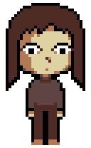
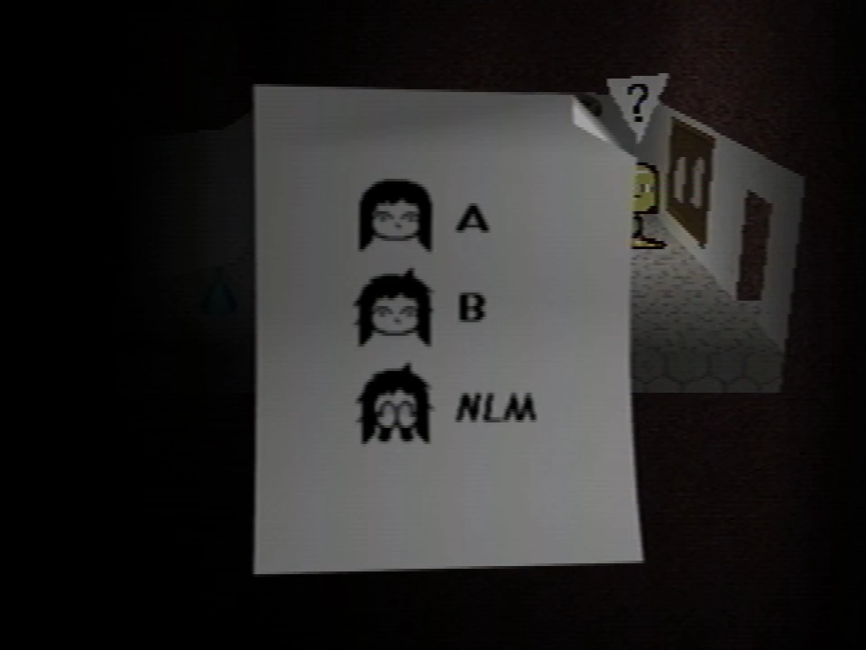
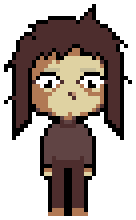
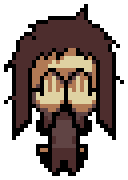

Fanmade recreated Care A sprite
Care is a character in the Petscop game. All three of her variations can be caught as pets and viewed in the pets menu, but are distinct from the other pets in the sense that she is considered a "person" by the Child Library and can be deposited into it.
Carrie Mark is a person within the series that the in-game Care represents and references. She is the child of Anna and Marvin. She was one of the earlier players of the Petscop game, with some recordings (shown in Petscop 19 and 21) showcasing her playing in various gens when she was a child. Petscop depicts events that happened to her outside of the game, including an incident where she is kidnapped by Marvin.
Both Care and Carrie Mark are typically represented in Petscop text boxes by yellow text.

Care is represented in-game through three pets.
She is first named and shown in Petscop 2 in the office. When Paul picks up the ringing phone in the office, it says "Care left the room". There is a note on the notice board on the wall depicting her three forms; A, B, and NLM. Later on, Paul first sees her face on the shed in the grave room. He sees Care NLM in the shed basement, but cannot catch her.
In Petscop 3, Paul enters the face from the shed into the Child Library and finds Care's room in the Child Library, which contains a note with an unspecified recipient (though implied to be Marvin). The note discusses that Care isn't growing eyebrows, and that the note's recipient is excited to hear this news. It then discusses how they brought Care into a school building, for her to later run out of it crying that nobody loves her before she wandered the Newmaker Plane.
Paul mentions in Petscop 5 how he attempted to ask the red tool about Care ("Who is Care?", "Who's Care?", and "Care?") to no result.
In Petscop 6, Paul first discovers the second page of the pet menu with additional slots, three of which contain silhoutettes of Care A, Care B, and Care NLM.
In Petscop 7, the pink tool indirectly references Care when talking about Marvin. Later, Paul encounters the person drop-off mechanic of the Child Library, and determines the Care pets must qualify as "people". Inside the Child Library, he enters Care's face from the shed with Mike's eyebrows and finds a room with an object on the table that the channel managers decide to censor.
In Petscop 9, through using the treadmill in Odd Care, Paul is able to catch Care NLM. He then tries dropping her off in the Child Library, but immediately picks her up from her room afterwards.
In Petscop 11, Paul finds Care A in the house in her bedroom. He looks around the house to try to find a way to catch Care A. He gets locked in the closet in her room. Marvin appears from the window, jumps down, and catches Care A. The room then resets a few moments later, and Paul goes in through the window in the same manner to catch Care A himself. Later, in a demo recording played at the end of the episode, Pall plays "Care's Melody" (according to the official subtitles) on the Needles Piano for Marvin.
In Petscop 14, Paul hums Care's melody at one point when pressing random buttons. After accessing the garage through "Attempt 22" with further demo recordings, Paul finds his file set to Strange situation, which depicts the player in place of Care returning home on her birthday. After running into the master bedroom, "Care" talks to Anna, though mistaking her as Jill, and demands to know where the disk and "discovery pages" are. Paul later discusses that the conversation that just took place in-game was based on a conversation he had last year on his birthday.
In Petscop 17, the Sound Test is shown. Care is mentioned a few times in the sound test; each cry for each of her pet forms, a presumed sound for P2 to TALK message sent sounds named "Care Message", and at the very end, two sound clips of Carrie; "Care Says "Uh-oh"" and "Care Says "Bye-bye"". Playing these final sound effects in a certain order and pattern opens the secret menu. The player uses Room Impulse, setting it to the house in gen 10. After selecting a certain player in Room Impulse, the selected player leaves the house and encounters text boxes that are addressed to Carrie.
One of the recordings shown in Petscop 19 is titled "care".
In recordings from 1997 shown in Petscop 20, Rainer leaves textboxes for Marvin that discuss how Carrie is still missing and that the family is still searching for her. In later recordings, Marvin is shown the caskets, many of which discuss supposed events regarding Carrie.
The recording shown in Petscop 21 is titled "care-dancing-sign".
In recordings shown in Petscop 23, after pushing objects into a pit in the school basement, a door in the basement opens, and Care B is accessible. The player catches her and reads her description. Shortly afterward, Marvin directs the player to place Care into the machine; the player does so. After not properly playing the Needles Piano, Care is turned into an egg, and can be caught like a pet. The egg is stored in the blank pet slot in the pets menu. The player puts the egg created from Care into the locker next to the pink & purple egg before exiting the school.
Care is a young child with light skin and long, brown hair. She wears a grayish-pink, long-sleeved shirt and grayish-red pants. She appears to be wearing dark cream-colored footwear or is barefoot. She has downward cast eyes and does not have eyebrows, as the note in her Child Library room details how she does not grow any.
Fanmade recreated sprite
Care A is found in the house. She sits on her bed protected by a force field but is captured by the player when they break in through the window above her bed.
Care A's description reads:
When the emergency began, you were all looking for Care A.
I told you all, we would never find Care A. When Care A goes missing, she goes missing forever.
My brother didn’t want us to find him, because he knew we were all looking for Michael A.
I’m back. This is my present for you.
I started it in 1996, for Marvin.
If you think they’re worth any effort, see if you can save Care B, or Care NLM. Care B is in the school, of course.
Fuck you all, and fuck me as well. Merry Christmas. Check your bathroom now.
- Rainer

Fanmade recreated sprite
Care B is found in the school basement. She is located in a dark room on the side, possibly a closet, that opens after pushing various items into the chasm in the middle of the room.
Care B's hair is extremely ruffled and messy, and she has dark circles under her eyes. Her mouth is also moved a few pixels down. There is subtle shading above her eyes, resembling eyebrows.
Care B's description reads:
Care B is scared and pounding on the door.
I open it. It's so dark that I can't see her.
So I pull her out, and the light hits her face.
And they won't even give me a picture of her now.
They're all scattered in graves.
And I'm a piece of shit. Here I go.
On the last page of the description, a shovel moves towards the right of the screen until it disappears.

Fanmade recreated sprite
Care NLM is found in the shed in the grave room in the Newmaker Plane. She is caught by setting the treadmill in Pen's room in Odd Care to -1 after plucking all the petals from the flower.
Care NLM's hair is messy just like Care B's. Care NLM sits on the ground with her legs behind her, covering her face. She appears to be crying.
Care NLM's description reads:
Care NLM escaped from the school’s basement and wandered the Newmaker Plane for days.
To catch her, you had to lie, but it may not be a lie forever.
You’re the Newmaker. You can turn Care NLM into Care A, and close the loop.
NLM most likely stands for "Nobody Loves Me."
In Petscop 11, while looking through the house calendars, Paul is discussing with an unknown person over the phone about a girl that went missing. He does not remember her going missing, but it is mentioned that he has a very strong resemblance to her and that they are exactly the same age.
In Petscop 17, through textboxes addressed to her, it is revealed that Care's full name is Carrie Mark.
Carrie was born on November 12th, 1992. Her parents are Anna and Marvin. Other family mentioned include an aunt, Jill, an uncle, Thomas, and a cousin, Daniel.
She went missing on June 5th, 1997, seemingly by kidnapping. She escaped the school on November 10th, 1997, and returned home on November 12th, 1997.
The Sound Test is also shown in Petscop 17, which include two sound clips of Carrie saying "uh-oh" and "bye-bye". Additional voice clips of Carrie can also be heard in Petscop 18 in the Extra Stuff menu, and in Petscop 20 while Marvin is looking through the camera in the tool room at the windmill. A part of the voice clips played in Petscop 20 that sound like "and now" are also played again near the end of the Petscop Soundtrack.
In Petscop 19, a short recording of Carrie playing Petscop presumably in 1995 is shown. The entirety of Petscop 21 is a recording of her playing, presumably in 1997.
Caskets 1 and 2 describe supposed incidents involving Carrie. In Casket 1, Marvin is described as trying to convince Carrie that she is ugly by describing "deformities" to her while showing her a distorted reflection of herself with a red vase; once she returns home, she sees herself clearly in a mirror. In Casket 2, Rainer describes how he watched Carrie spinning around the house one day and that she liked to do so, but that he was horrified and disgusted by it for unclear reasons.
In Petscop 24, Carrie's name is shown to be included in the Book of Baby Names. She is labeled with the word "dizzy".
The counselor session shown through Room Impulse in Petscop 22 are possibly putting the player in the role of Carrie going through a counseling session at school, and what the counselor discusses may be addressed to her.
The shovel moving across the screen in Care B's description is likely representative of Rainer grave-robbing. Part of the description explains how Rainer cannot get a picture of Care because they are buried in graves, but the rest indicates he will resort to grave-robbing to obtain one.
Carrie being associated to the word "dizzy" in the Book of Baby Names may relate to Casket 2's description.
In earlier episodes of Petscop, the real-life case of Candace Newmaker is alluded to in relation to Care and Carrie particularly through references to rebirthing. However, most of these allusions were no longer present after Petscop 10, and rebirthing in Petscop took on a different depiction than the attachment therapy which resulted in Candace's death.
Care NLM has some references to the character Daisy-Head Mayzie. Care is first discovered in the shed in the grave room, which has a daisy that Paul plucks, similar to the end of the book, where Mayzie plucks a daisy. Care is also probably linked to Daisy-Head Mayzie because of the initials NLM, which most likely stand for "Nobody Loves Me."
The deflowering theory postulates that plucking the petals from the daisy in the shed that affects Care NLM is meant to be a visual metaphor for "deflowering"; a euphemism for taking a person's virginity, particularly by rape. In association, it suggests it is possibly responsible for Care's emotional trauma resulting in behavior of distrust and instability.
| People | Paul · Belle · Carrie · Marvin · Rainer · Anna · Mike · Lina · Jill · Daniel |
|---|---|
| Characters | Guardian · Amber · Pen · Randice · Roneth · Toneth · Wavey · Care · Tiara |
{kind=link}
{kind=link}
{kind=link}
{kind=link}
{kind=link}
{kind=link}
{kind=link}
{kind=link}